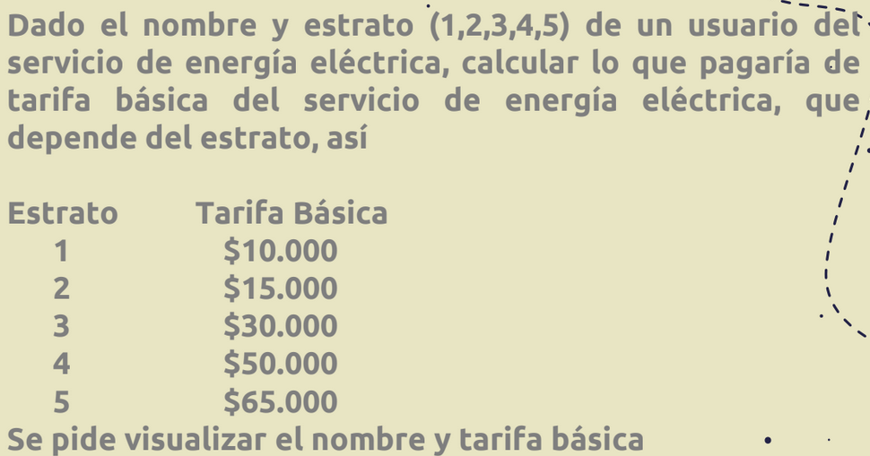

06/03/2023
Validaciones - excepciones:
1. validar tipo de dato
2. rango de valores
while True (significara mientras haya un error)
break (sale del ciclo, break significa que se salga del ciclo, significa romper)
Del codigo se valida el tipo de dato:
..........
while True:
try:
N=int(input("Cantidad de usuarios: "))
break
except ValueError:
print("La cantidad de usuarios debe ser un dato entero ")
...........
En caso de que N=un valor que no es un int, entonces mostrara un el mensaje que esta en "except"
print("La cantidad de usuarios debe ser un dato entero ") y este se sigue ejecutando hasta que el
valor de N sea un numero entero saldra del ciclo while
while True:
try:
=int(input())
break
except ValueError:
print()
#continue: regresa de nuevo al ciclo es decir que reinicia el ciclo
ejericio_Python:
#Programa
#Autor:
#Fecha: 06/03/2023
while True:
try:
N=int(input("Cantidad de usuarios: "))
break
except ValueError:
print("La cantidad de usuarios debe ser un dato entero ")
totalPagar=0
for i in range(N):
while True:
try:
codigo=int(input("Codigo: "))
break
except ValueError:
print("El codigo debe ser un dato entero")
nombre=input("Nombre del usuario: ")
while True:
#En este caso no se hace con try ni except debido a que el programa
#python no genera ningun error por tanto no detecta este error
#por esta razon no se usa el try en este while
estado=input("Estado(V:Vigente, S: Suspendido): ")
if estado!="V" and estado!="S":
print("El estado debe ser V o S")
continue
break
while True:
try:
estrato=int(input("Estrato (1,2,3,4,5,6): "))
if estrato<1 or estrato>6:
print("El estrato debe entre 1 y 6")
continue #continue lo regresa de nuevo al ciclo es decir que reinicia el ciclo
break
except ValueError:
print("El estrato debe ser un dato entero")
while True:
try:
consumo=float(input("Consumo del mes: "))
break
except ValueError:
print("EL consumo debe ser un numero con decimales")
if estado=="V" or estado=="v":
if estrato==1:
tarifaBasica=10000
elif estrato==2:
tarifaBasica=20000
elif estrato==3:
tarifaBasica=30000
elif estrato==4:
tarifaBasica=45000
elif estrato==5:
tarifaBasica=60000
else:
tarifaBasica=70000
valorConsumo=consumo*200
valorPagar=tarifaBasica+valorConsumo
#se puede usar asi: totalPagar=totalPagar+valorPagar
#tambien se puede usar asi: totalPagar+=valorPagar
#es lo mismo al final
totalPagar+=valorPagar
print("Nombre del usuario", nombre)
print("Tarifa basica ", "{:,.2f}".format(tarifaBasica))
print("Valor consumo ", "{:,.2f}".format(valorConsumo))
print("Valor a pagar ", "{:,.2f}".format(valorPagar))
print("Valor total: ", "{:,.2f}".format(totalPagar))
Funciones
Una funcion tiene: entrada, proceso y salida
Modularidad: segmentacion de funciones e independientes

Análisis –> Ejercicio funciones
ENTRADA: N, iniciar sumador
nombre, estrato, impulsos
PROCESO: Ciclo: Proceso Abonado -> FOR (N abonado)
Condicional (tipo anidado): calcular tarifaBasica
valorImpulsos=impulsos*100
valorPagar=tarifaBasica+valorImpulsos
Incrementar sumador
SALIDA: nombre, valorFactura
TotalPagar -> Sumador
Análisis - Modularidad: Nombre: facturacion abonado
ENTRADA:
PROCESO:
SALIDA: valorPagar
Python:
def facturacionAbonado(estrato,impulsos):
if estrato==1:
tarifaBasica=10000
elif estrato==2:
tarifaBasica=15000
elif estrato==3:
tarifaBasica=30000
elif estrato==4:
tarifaBasica=50000
else:
tarifaBasica=65000
valorImpulsos=impulsos*100
valorPagar=tarifaBasica+valorImpulsos
return valorPagar,tarifaBasica,valorImpulsos
#Programa principal
N=int(input("Cantidad de abonados: "))
totalPagar=0
for i in range(N):
nombre=input("Nombre del usuario: ")
estrato=int(input("Estrato (1,2,3,4,5): "))
impulsos=int(input("Cantidad de impulsos: "))
#Llamado a la funcion
valorPagar,tarifaBasica,valorImpulsos=facturacionAbonado(estrato,impulsos)
totalPagar=totalPagar+valorPagar
print("Nombre del usuario ",nombre)
print("Tarifa basica: ","{:,.2f}".format(tarifaBasica))
print("Valor impulsos: ","{:,.2f}".format(valorImpulsos))
print("Valor factura: ","{:,.2f}".format(valorPagar))
print("Valor total a pagar: ","{:,.2f}".format(totalPagar))
Python:
#Programa
#Autor:
#Fecha: 07/03/2023
def validaEntero(etiqueta):
while True:
try:
dato=int(input(etiqueta))
break
except:
print("El dato debe ser un entero ")
return dato
def validaEstrato():
while True:
try:
estrato=int(input("Estrato (1,2,3,4,5): "))
if estrato<1 or estrato>5:
print("El estrato debe estar entre 1 y 5")
continue
break
except ValueError:
print("El dato debe ser un entero")
return estrato
def facturacionAbonado(estrato,impulsos):
if estrato==1:
tarifaBasica=10000
elif estrato==2:
tarifaBasica=15000
elif estrato==3:
tarifaBasica=30000
elif estrato==4:
tarifaBasica=50000
else:
tarifaBasica=65000
valorImpulsos=impulsos*100
valorPagar=tarifaBasica+valorImpulsos
return valorPagar,tarifaBasica,valorImpulsos
#Programa principal
N=int(input("Cantidad de abonados: "))
totalPagar=0
for i in range(N):
nombre=input("Nombre del usuario: ")
#estrato=int(input("Estrato (1,2,3,4,5): "))
estrato=validaEstrato()
impulsos=validaEntero("Cantidad de impulsos: ")
#Llamado a la funcion
valorPagar,tarifaBasica,valorImpulsos=facturacionAbonado(estrato,impulsos)
totalPagar=totalPagar+valorPagar
print("Nombre del usuario ",nombre)
print("Tarifa basica: ","{:,.2f}".format(tarifaBasica))
print("Valor impulsos: ","{:,.2f}".format(valorImpulsos))
print("Valor factura: ","{:,.2f}".format(valorPagar))
print("Valor total a pagar: ","{:,.2f}".format(totalPagar))
87 % de almacenamiento usado …
Puedes liberar espacio u obtener más almacenamiento en Drive, Gmail y Google Fotos.
def validar_int(c):
r = int
while True:
try:
r = int(input(c))
break
except ValueError:
"Tipo de dato incorrecto"
return r
def validar_int_range(c,a,b):
r = int
while True:
try:
r = int(input(c))
if(rb):raise ValueError("")
break
except ValueError:
print("Dato no valido")
return r
lista = []
n = validar_int("Ingrese el numero de repiticiones: ")
for i in range(n):
g = validar_int_range("Digite un numero que no sea menor de 0 o mayor de 9: ",0,9)
z = validar_int_range("Digite un numero que no sea menor de 10 o mayor de 15: ",10,15)
lista.append(g)
lista.append(z)
print(lista)